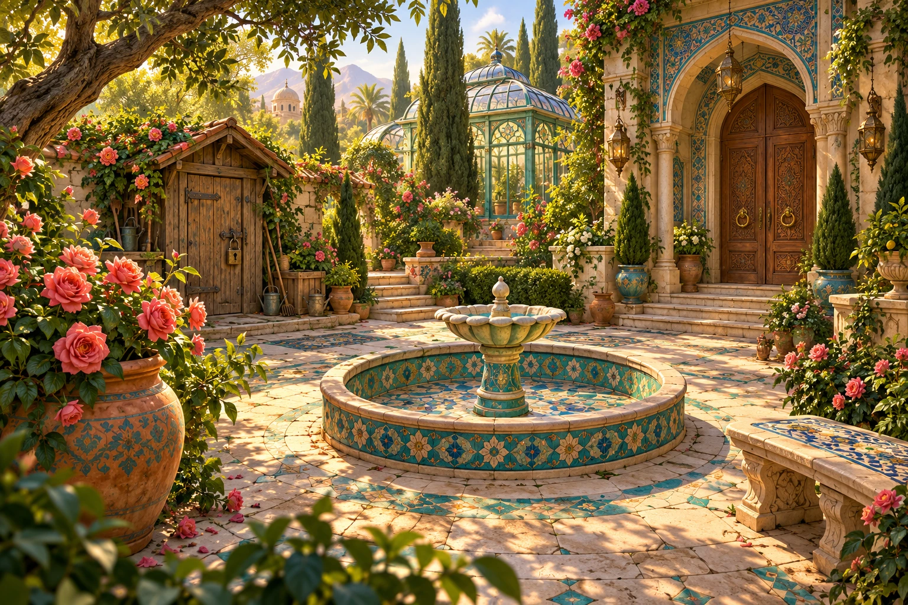

فصل اول • میراث پنهان
حیاط باغ
بازگشت به حیاط ←
یک باغ قدیمی، هزار راز ناگفته
✦
راز باغ
فیروزه
هر سرنخ، دری به یک خاطره…
قدم به باغ بگذار
←
فصل اول: میراث پنهان • نسخهٔ ۰٫۱
جستوجو کن · سرنخها را به هم وصل کن · باغ را زنده کن
×
↻
برای دیدن تمام باغ، گوشی را افقی بگیر
ادامه در همین حالت